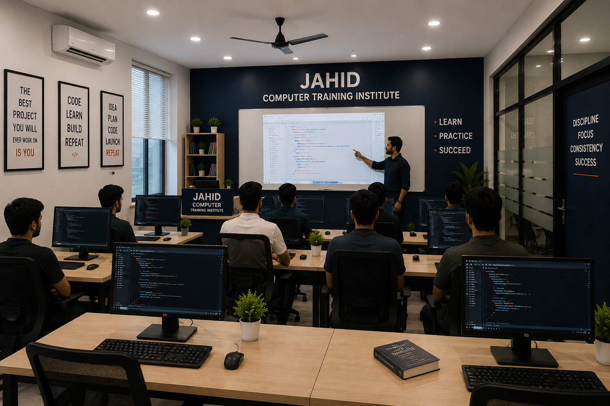
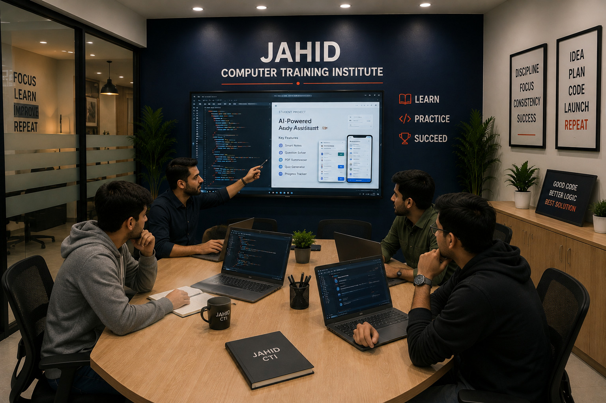

Practical first
We connect concepts to assignments, demonstrations and projects so learners can see why a topic matters.
ABOUT THE INSTITUTE
Jahid Computer Training Institute is a Kurnool-based training institute focused on practical computer education, programming, digital tools and career-ready technology skills.
OUR PROMISE
The purpose of training is confidence: the confidence to open a code editor, build a dashboard, design an interface, understand a database or discuss a technology project without feeling lost.
That is why our programmes combine instructor-led sessions with guided practice and project work. Students get a structured route through the subject instead of a collection of disconnected tutorials.

WHAT DEFINES US
We connect concepts to assignments, demonstrations and projects so learners can see why a topic matters.
Courses move from fundamentals to tools, guided exercises and applied work in a deliberate order.
Questions, review sessions and project discussions make room for learners who need a little more guidance.
We discuss practical roles, portfolio expectations and the habits that help learners keep improving after class.

A LEARNING JOURNEY
Learn the language, concepts and patterns behind the subject.
Work through exercises with feedback instead of only watching demonstrations.
Apply the skill in assignments and guided projects that can be explained and improved.
Use the experience as a foundation for further study, internships, freelance work or entry-level opportunities.
READY TO START?